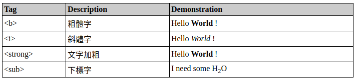

請閱讀 HTML Table、Formatting、Quotations、Comments、Computercode、Entities、Symbols 各單元， 並摘錄相關重要 Tag 進行說明及展示。(範例如下圖所示)
| Tag | Description | Demonstration |
|---|---|---|
<b> |
粗體字 | Hello World! |
<i> |
斜體字 | Hello World! |
<strong> |
文字加粗、加重語氣 | Hello World! |
<em> |
斜體文字、強調的內容 | Hello World! |
<mark> |
突顯高亮文字、文字帶有底色 | Hello World! |
<small> |
定義小號字 | Hello World! |
<del> |
標示被刪除的文字 | Hello |
<ins> |
標示被編輯插入的新文字、將文字加底線 | Hello World! |
<sub> |
下標文字 | Hello World! |
<sup> |
上標文字 | Hello World! |
| Tag | Description | Demonstration |
|---|---|---|
<q> |
行內引用文字、短文字引用 | WHO's primary role is to: direct international health within the United Nations' system and to lead partners in global health responses. |
<blockquote> |
引用段落文字、長文字引用 | WHO's primary role: Direct international health within the United Nations' system and to lead partners in global health responses. |
<abbr> |
標示縮寫文字 | WHO announced COVID-19 outbreak as a pandemic on 11 March 2020. |
<address> |
標示地址 | WHO Headquarters: Avenue Appia 20 1211 Geneva, Switzerland |
<cite> |
引用作品 | Justice: What's the Right Thing to Do? is a 2009 book on political philosophy by Michael J. Sandel. |
<bdo> |
定義文字方向，使用dir定義方向dir="ltr": 文字從左至右(預設)dir="rtl": 文字從右至左
|
Hello World! Hello World! |
| Tag | Description | Demonstration |
|---|---|---|
<!-- --> |
註解文字 |
<!-- 單行註解，只會在 HTML code 裡看到，不會出現在畫面上 --><!-- |
| Tag | Description | Demonstration |
|---|---|---|
<kbd> |
標記鍵盤輸入元素 | You can use Ctrl + S to save files. |
<samp> |
標記程式輸出內容 | Error from my code: NameError: name 'os' is not defined |
<code> |
標記程式碼 | To delete a single file, use pathlib.Path.unlink(), os.remove() or
os.unlink(). |
<var> |
標記程式碼或數學式中的變量 | A simple equation: x = y + 2 |